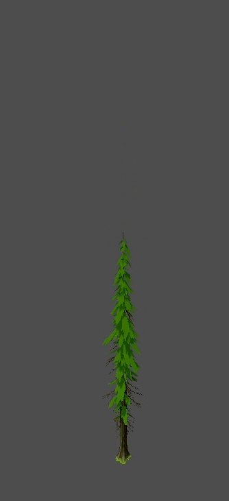

Génération procédurale d'arbres

Je désirais explorer la génération procédurale de mesh pour un contexte de jeu. Les conifères furent un choix stratégique pour éviter d'avoir à faire un système de branches.
Informations
Crédits
Moodboard

Contexte
Utilisation de l'IA générative?
Utilisation de ChatGPT et Claude pour explorer, générer, corriger, compléter, itérer et améliorer une partie du code.
Processus 1/5
V1

Initialement, je pensais accomplir ce projet pour un potentiel jeu en vue du dessus ou isométrique. Ainsi, je n'ai fait que des souches.
Processus 2/5
V2

Wireframe

Paramètres
Par la suite, j'ai changé de direction, et ai donc voulue faire l'arbre complet.
Processus 3/5
De la variété


Par la suite, il a fallu faire un système pour modifier les valeurs comme la taille à partir d'une seule valeur de façon déterministe.
Processus 4/5
Une forêt

Un autre système, celui-ci en charge de distribuer les arbres, pour passer d'un arbre à une forêt. C'est à ce moment que la performance est devenue importante, parce que le temps de génération d'un arbre se retrouve multiplié par des dizaines ou des centaines de fois.
Processus 5/5
La continuité

Sol en 'shell texturing' pour simuler la mousse

Petites plantes

Buisson
Une forêt n'a pas que de grands arbres. Je suis maintenant en train de créer le sous-bois, espérant rendre cette forêt bien vivante.
Résultat

En conclusion
C'est un projet complexe au niveau de la génération de mesh et de l'optimisation. C'est ce qui à pris la majeure partie du temps dédié à ce projet. J'ai beaucoup appris sur comment gérer des systèmes à grande échelle et comment bien organiser mon code.